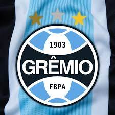
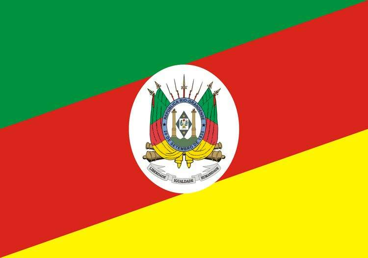

O Sport Club Internacional é um clube multiesportivo brasileiro com sede na cidade de Porto Alegre, capital do Rio Grande do Sul. Foi fundado em 4 de abril de 1909, pelos irmãos Poppe, com o objetivo de ser uma instituição democrática e sem preconceitos.
Grêmio Foot-Ball Porto Alegrense é um clube de futebol brasileiro da cidade de Porto Alegre, no Rio Grande do Sul, fundado em 15 de setembro de 1903 por Candido Dias da Silva. É considerado um dos maiores clubes do Brasil e da América do Sul. Suas cores são azul, preto e branco.
Rio Grande do Sul é o estado mais a sul do Brasil e faz fronteira com a Argentina e o Uruguai. A nordeste, a montanhosa Serra Gaúcha alberga a região vinícola do Vale dos Vinhedos e inclui cidades turísticas de estilo alemão como Gramado e Canela, famosas pelas paisagens naturais pitorescas. Porto Alegre, a capital, é um grande porto com estruturas clássicas como o Mercado Público e a Catedral Metropolitana, no centro histórico.